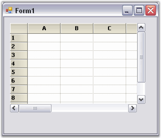
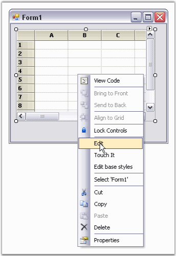
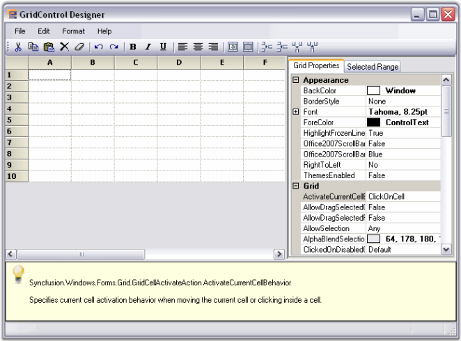
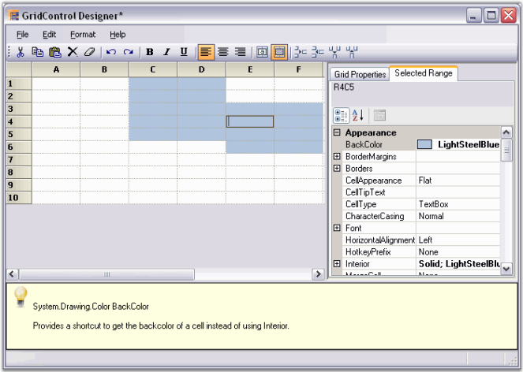

This section covers information on how to add a grid control to your Windows application.
Adding a Grid Control to your Application
Following step-by-step procedure illustrates how to add a simple grid control to your application.
1. Drag the GridControl component from the toolbox onto the form.

Figure 42: Grid Control
2. To edit the cell level properties of the grid (and also general Grid control properties), right-click on the Grid control and select Edit from the context menu.

Figure 43: Grid Control Context Menu
The GridControl Designer window is displayed. By using the GridControl Designer, the cell contents/styles, as well as general grid properties can be modified.

Figure 44: GridControl Designer
3. Single cells can be modified along with a selection of ranges. To do this, select a range of cells, and switch to the Selected Range tab to view the property grid for the selection.

Figure
45: Property Grid for Selected Range
GridControl Designer also lets you to save/load xml formatted files, and Soap templates.
4. When the changes are complete, simply exit out of the designer. If changes have been made, you will be prompted to save the changes to the Grid control in the designer.